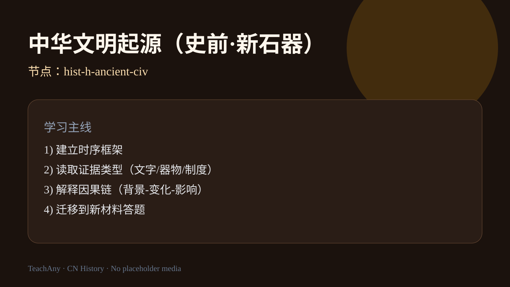
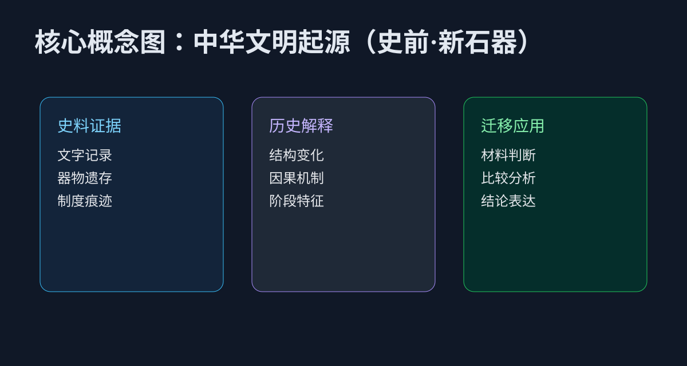
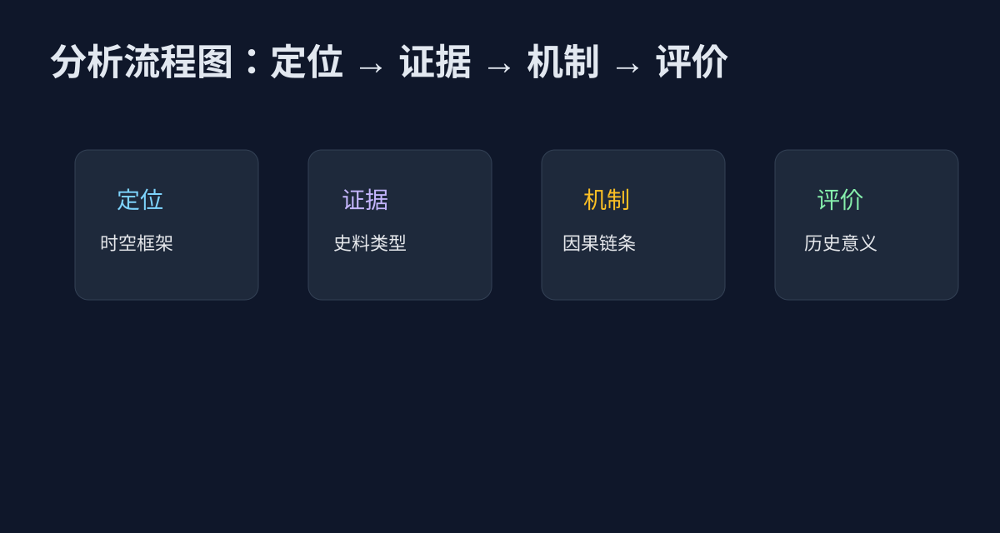

ABT 情境引入
And：你知道仰韶、龙山等遗址名称，也知道“考古发现很重要”。
But：但遇到题目时，常不知道如何把器物、聚落、墓葬差异转成历史结论。
Therefore：本课训练“证据→判断→结论”链条，学会从遗址事实推导文明起源特征。
通过典型遗址与考古证据，理解中华文明起源及其与国家形成的关系。
证据链因果解释迁移应用

课标要求通过仰韶、良渚、二里头等代表性遗存，理解农业定居、社会分工与礼制萌芽如何推动复杂社会形成。学习重点不是背诵遗址名称，而是说明“遗存—推论—结论”的证据链，并能比较不同流域文明起源路径的共性与差异。
导入任务：比较黄河流域粟作与长江流域稻作两条线索，写出它们对聚落规模、手工业分工和权力象征的不同影响。诊断提示：把“文明”简单等同于“有城墙”会忽略礼器、祭祀与文字萌芽等关键指标，需要回到考古证据本身重新组织解释，并完成一次课后 150 字证据链小练。
And：你知道仰韶、龙山等遗址名称，也知道“考古发现很重要”。
But：但遇到题目时，常不知道如何把器物、聚落、墓葬差异转成历史结论。
Therefore：本课训练“证据→判断→结论”链条，学会从遗址事实推导文明起源特征。
点击时代按钮切换疆域版图；悬停高亮边界；点击红色城市标记查看详情。
判断“文明起源”最关键的证据优先看什么？
把本课知识拆成三层：先找可核验史料，再写因果机制，最后完成迁移表达。避免只背结论、不引证据。

答题时按“定位→证据→机制→评价”四步组织语言；每步至少对应一条材料信息，防止空泛概括。

调整“证据完整度”，观察历史解释质量变化。
迁移练习：任选本课一个制度变化，写出“背景—措施—短期效果—长期影响”四步解释，并指出至少两条可反驳的替代解释，训练历史解释的开放性与证据意识。
答题模板：①时空定位；②证据分类；③因果链；④历史意义。
易错点：把考古材料当“事实展示”，没有上升到“社会组织与权力关系解释”。
例题延伸：若材料只给出“郡县官吏由中央任免”，你应如何把它与“削弱地方世袭权力”联系起来？关键提示：制度文本本身不是结论，必须说明机制。
博物馆看展时，导览词会讲“器物美感”，历史学习要进一步问“这些差异说明了什么社会结构”。
例题延伸：若材料只给出“郡县官吏由中央任免”，你应如何把它与“削弱地方世袭权力”联系起来？关键提示：制度文本本身不是结论，必须说明机制。
真实场景：参观博物馆商周展区时，优先观察青铜器纹饰、铭文与伴出器物组合，而不是孤立记住器物名称；把观察结果回填到本课证据分类表。
输入一个历史材料描述，让 AI 生成“证据-机制-结论”草稿；或上传材料截图做结构化诊断。
例题延伸：若材料只给出“郡县官吏由中央任免”，你应如何把它与“削弱地方世袭权力”联系起来？关键提示：制度文本本身不是结论，必须说明机制。
“早期国家形成”最能由哪组现象共同支撑？
例题延伸：若材料只给出“郡县官吏由中央任免”，你应如何把它与“削弱地方世袭权力”联系起来？关键提示：制度文本本身不是结论，必须说明机制。
复述本课主线并标出 3 个关键词。
用 2 条证据解释 1 个历史机制。
迁移到新材料，完成“证据-机制-结论”完整表达。
例题延伸：若材料只给出“郡县官吏由中央任免”，你应如何把它与“削弱地方世袭权力”联系起来？关键提示：制度文本本身不是结论，必须说明机制。
挑战层补充：撰写 150 字“小论文式”段落，必须包含时空定位、两类证据与一句历史评价；教师可用 rubric 从“证据—解释—结论”三项打分。
例题延伸：若材料只给出“郡县官吏由中央任免”，你应如何把它与“削弱地方世袭权力”联系起来？关键提示：制度文本本身不是结论，必须说明机制。
本课小结强调：历史学习不是背诵年代表，而是在时空中组织证据、解释机制并作出有限度的评价；课后请用 5 分钟复盘今日地图观察与材料题错因，并尝试向同学解释一次“农业定居如何推动礼制与国家萌芽”。
视频内容：课程主线、证据框架与迁移任务。